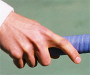

Previous: Is the Underhand Serve Underhanded | 🏠 Classic Lessons Home | Next: Lag and Snap or Lag and Stroke
Keys to the Kick
Comprehensive unified tennis knowledge base — Fundamentals, Stroke Analysis, Reference Library, and more
Keys to the Kick
Chris Lewit
The kick serve: one of the most difficult--and effective--shots in the game.
Is there anything harder in tennis than learning a great kick serve? The topspin serve is, in my opinion, the most difficult shot in the game and arguably the hardest to teach. Students often struggle for years before figuring out the proper mechanics--sometimes only by luck or trial and error. Other players give up and relegate themselves to hitting only slice and flat serves.
A few talented players will pick this serve up easily, but for mere mortals--the less gifted 99 percent rest of us--learning the topspin serve comes as a tremendous challenge. I spent years in the juniors hitting thousands of balls before finally mastering this serve in my twenties. That was not until after college when I was competing on the ITF pro futures tour.
For me, it happened because I found a new coach and former elite tour player who shared with me the secrets of mastering the kick. I almost want to cry when I think of all the hours I spent hitting buckets and buckets of balls. My coaches in the juniors were great guys, but they didn't provide me with the technical framework and the check points I needed to understand and master the shot. This is the same problem most players face. They are never exposed to right technical framework or training system.
Understanding the right technical framework is the key to mastering the kick.
My goal in this first article is to present the technical elements and check points that are critical to learning and teaching the kick. As you will see, there are many components to master, and this is what makes the serve so challenging. In a second article, I will share an additional series of unique drills that I use every day with my students to develop the kick.
Using this approach, I have taught hundreds of junior players to hit great kick serves, from as young as 6 year old beginners to 16 year old top national players. I have also taught the same serve to serious adult players at many levels.
The Three Kicks
For the sake of clarity in this article, I will use the terms "topspin" and "kick" interchangeably. But in reality there are three variations of the kick serve.
These three variations are what I call True Topspin, Slice Topspin, and Twist. The differences are in the path of the ball through the air, the path of the ball after the bounce, and most importantly to understand, how the racket moves to the contact to produce these differences. Let me define what I mean by each of these three serves.
The three kicks all bounce differently off the court.
What I call True Topspin bounces high and straight ahead. This serve is the most basic kick serve and most players will use it for the second serve a large percentage of the time, especially on hard courts. When well executed this serve is heavy and difficult to deal with because it can bounce well above the returner's preferred contact height.
What I call SliceTopspin bounces high but (from the server's perspective) also has a right-to-left movement after the bounce. Players will use this serve less frequently than the True Topspin, typically when hitting second serves down the T in the ad court, or into the body or out wide in the deuce court. The advantage here compared to the True Topspin, is that the ball fades or curves away from the returner (or in the case of a body serve, jams the returner). This serve is a must to hit effective second serves against left handers.
The third topspin variation is the Twist. What I call Twist bounces high but actually moves from the server's left to his right. Typically it is hit to the returner's backhand, especially in the ad court, where it kicks high away from the player after the bounce.
Let's break the kick down, component by component.
This serve is used to pull the returner out of position, force him to take additional steps to the ball, and play a contact point at shoulder level or even higher. It is used most often on clay, but can also be extremely effective on hard courts--especially gritty or high-rebound hard courts--when hit with the right combination of speed and spin.
So let's look at the checkpoints for all three kick serves. We'll look at the elements they have in common and also the adjustments players must make to hit each of the three variations.
The Components
There are multiple technical components in the kick serve, and this complexity is one thing that makes the serve difficult. Even though there is a lot of information, it is important to understand each of the components clearly, and then how to put them together in the complete motion.
These components are:
Triceps Extension
Extension
Hip and Shoulder Lines
Leg Drive
Wrist and Hand Action
Post-Contact Arm Actions
Finish
Grip
Foundation or Stance
Toss and Tossing Mechanics
Shoulder Tilt
Power Position
Buttscratch--not Backscratch
Back Arch
No wonder players and coaches struggle with this motion. If even one technical element is missing, the serve may not be effective. Let's go over the components from start to finish starting with the grip.


The Strong Continental with the index knuckle just off Bevel 1.
Grip
The grip is critical to learning an effective topspin serve. Most players who come to me do not demonstrate a strong enough grip to effectively hit heavy spin. I call this grip a Strong Continental. The problem is that most players try to hit the serve with a milder version of the continental, or even with a grip rotated toward an eastern forehand.
The frustrating thing about defining the right grip is that coaches--and especially coaches from different countries--use different terminology and also tend to have different opinions about the position of the index knuckle.
I remember first working on my kick with my tour coach, a former top 100 ATP player and national coach from Israel. He showed me the grip that I now teach. This grip is definitely more extreme than the typical "continental" as defined by most coaches in the US.
Whatever you want to call it, I believe in this "strong continental," with the index knuckle very near bevel 1 (top bevel). This grip promotes heavy spin without slowing down the ball too much, as a more extreme backhand serve grip can do. I also believe players can hit the first serve with this grip, rather than making a dramatic grip change between first and second serves, which can hurt disguise.
Boris: a great player with an unorthodox grip for hitting kicks.
Of course, some players are extremely talented with their wrists and hands, and they can get away with a less extreme grip. But I believe even these players are losing some rotation on the ball by not shifting to a stronger grip; and it is my contention that these are the players whose second serves tend to break down under pressure in high level competition.
A tour example that comes to mind is Boris Becker, who was incredibly talented, but used a serve grip more towards the eastern forehand. Becker was known to lose control of his kick, particularly under pressure, and sometimes his second serve became inconsistent. Although Boris was obviously a great player, I believe that he didn't get the maximum possible number of revolutions on his serve because of his unorthodox grip.
There is also an alternate option to using one grip. Rather than using the exact same grip for both serves, some players choose to make a subtle shift of the palm position--or even of the knuckle position--between the first and second serve. I would estimate that this includes a quarter of the top players or slightly more, based on my first hand observations.
Many players can use the Strong Continental for the kick--and the other serves.
Whether a player shifts grips for the second serve usually depends on the philosophy his developmental coaches had when they were building his game as a junior. Some players don't even realize that they make a shift. They naturally adjust the heel of the palm slightly more toward the top of the frame--to maximize the brushing action upward to the ball.
I believe that this is acceptable. However, the grip shift should not be extreme and the shift should not be noticeable by the opponent. When building a world-class serve, disguise with all the serves--flat, slice, and kick--should be an important priority.
Many elite coaches insist on the single grip, but I allow for a subtle change if it helps the player and does not hinder disguise. From a developmental standpoint, encouraging this grip shift can help a player break through a learning roadblock. As a player develops, the placement of the hand can be moved toward one universal grip.
Junior players can master the grip if it is taught early.
Having said all that, my preference is still the single grip, and if the "Strong Continental" is taught early in the development cycle, I believe most players should be able to get the hang of using one grip for all serves.
The Mid-Swing Switch
When a player is learning this strong grip, the coach must watch the student very carefully in mid-swing. Many kids show me the right grip before the kick serve and then, somewhere in the backswing, whether consciously or unconsciously, they slip back to a weaker grip before they hit the ball.
The coach must watch that hand like a hawk. The way to make sure the grip is remaining the same is to check the grip at the end of the swing, not at the beginning. Some crafty kids will try to fool you by shifting, and then shifting back after the serve. The fact is that it's difficult for them to switch out of their old comfort zone, even if they want to. So you have to be strict if you are coaching and honest with yourself, if you are a player.
The Foundation
The foundation should close the hips at the start of the motion.
When I am building a kick serve, my preference is a foundation or stance that really closes the hips at the start of the motion, with an angle of about 130 degrees to the baseline. I believe that this maximizes disguise, spin, control, and power. The feet should generally be about shoulder width apart, unless the player has a step-up action, in which case the feet can be a bit wider.
This closed hip position will promote a deep turn of the back and shoulders during the tossing phase of the swing. I believe this closed hip position helps players in the directional control of the serve, especially in learning to angle the kick serve sharply out wide.
Many players do not have enough hip and shoulder turn on the kick and this prevents them from getting enough action on the ball. They may be able to hit a decent topspin serve with a less coiled hip and shoulder position, but unable to hit a great twist.
With this foundation, the player will begin to get the feel for the right sequence of the hip rotation--something I call the hip drag, as discussed in more detail below.
From this foundation, I also believe in (and tend to teach) the step-up leg action, sometimes called the pinpoint or sliding stance. In my opinion, it is more explosive. But obviously there are players with great kicks who hit from the platform stance, keeping the feet in position until they leave the court.
In my experience the step-up leg action is more explosive.
This is a debated topic in coaching circles. Research has not provided any definitive answers, and there are some conflicting and confusing studies. In my own experience, however, I found that the step-up stance gave me more power. As a high school basketball player I always used the step up footwork when I was trying for a dunk, because it allowed me to jump higher, and I believe the analogy holds for the serve.
Regardless of the choice here, when building a world-class kick serve, the body must be appropriately coiled. This is why I believe that an alignment of about 130 degrees will yield better kick serves and especially more twist action.
The foot position and stance for the second serve should be exactly the same as on the first serve to maximize the disguise of the delivery. On the first serve, I believe the 130 degree closed hip position will also load up more energy, allowing the player to uncoil into the serve to get more power. More twist on the second, more power on the first, and great disguise. I don't think you can wrong with the deep hip position created by this starting stance.
The toss: how far to the left and how far in front?
Tossing Mechanics
Tossing is another debated topic, especially on the kick serve. How far should the toss move to the server's left? Should the toss be more over the shoulder at 11 o clock at contact, or is 12 o clock the correct position?
How far forward or back should the second serve toss be? And a related question, should the player coil the shoulders during or after the toss?
The toss position will determine your ability to hit the third most extreme kick variation, the Twist. It may affect your ability to disguise your serve as well. The different viewpoints here can be very confusing.
Tossing Debate
The actual placement of the toss for the kick serve will depend on the philosophy of the coach. There are two main schools, and here we find the origin of the tossing debate. The first school of thought says that the toss should be more centered above the body. These coaches will argue that this gives the serve more disguise--and that the first and second serves cannot be differentiated easily. These coaches usually do not value a back arch (which is directly related to how far the toss is thrown to the left). In fact, they tend to discourage the back arch altogether.
Is the back arch a problem--or an asset?
Many of these coaches believe that tossing too far to the left and arching the back can cause a breakdown of the lower back and injury down the road. For this reason they encourage their players not to toss to the extreme left. The trade off for this school of thought is less twist action for more disguise and (presumably) less risk of injury.
But the issue is not only related to the perceived potential for injury. It is also related to court surface and style of play. Disguise of the serve tends to reward the player more on fast courts. Coaches and players who subscribe to this school therefore tend to be from regions with predominantly fast surfaces, surfaces like grass or fast indoor courts or carpet. This tends to include coaches from the Scandinavian countries, England, India, Australia, and many parts of the US.
The second school of thought says that the toss should be more over the shoulder to the left of center. Coaches from this school believe in getting maximum twist sidespin and aren't as concerned about the potential for injury from arching the back. These coaches value the twist serve as a means to really make the returner move and to pull the returner off the court--they want the extreme angle. This philosophy will be more common in regions where clay court tennis is dominant, such as South America, some parts of France, and in Spain.
A toss to the left and more back arch equals more angles.
Coaches and players from these regions want angles, angles, angles! The coaches want their players to open up the court and run their opponents coast to coast. So the natural corollary to this philosophy is to promote serve mechanics that maximize the angles, and these mechanics are toss to the left and a more extreme back arch.
Most of these coaches would argue that the risks of arching the back can be minimized with a good stretching and strengthening program. They don't value disguising the kick serve as much, because, on clay, disguising the serve does not provide the same benefits as on super fast surfaces.
Clay is slow enough that the surprise factor is minimized and thus the returner usually has time to make last minute adjustments, even on a perfectly disguised serve. This school of thought will take the extreme angle and heavy twist action over disguise any day. That's different than on a grass court or a slick hard court where the ball shoots through the bounce must faster. Here good disguise on the serve can mean a lot of free points.
How much twist you develop is related to surface and game style.
The clash of these two serving schools is the main reason we have so much debate and confusion about the kick serve mechanics today. You will have to decide which side of the fence you want to call home. Do you want disguise or do you want more twist action and angle for your serve or your player's serve?
Do you anticipate that you or your player will be more of a slow court grinder or likely to be more successful as a fast court attacking player? These types of individual considerations are factors in determining how you should develop the mechanics of the kick serve, and the serve motion in general.
I would like to offer two points of personal opinion. I believe that the risk of back injury with the twist serve has been exaggerated, especially in American coaching circles and by overly conservative doctors and physical therapists. If we take this ultra conservative route, we will soon be afraid to teach our students anything stressful on the body or anything that pushes them hard.
I firmly believe that a player can develop a serve with noticeable back arch and use it effectively and safely for a career if the proper stretching and strengthening programs are in place. The problem is that many players do not have such a program and thus expose themselves to a higher chance of injury.
I teach the back arch--in conjunction with stretching--early in a player's development.
I believe the lower back should be sore after practicing a lot of kick serves, especially the morning after. This is how the muscles in that area grow stronger and become more supple. Most coaches are avoiding teaching this serve out of fear, and in this litigious society, you can understand why. One prominent coach now actually makes his students sign a legal release before agreeing to teach them the kick.
One problem is that the back arch and stretching/strengthening programs are not being taught to players at a young enough age. Coaches wait until players are13, 14, or 15 to teach kick serve mechanics. There is this idea that at a later age, the player will be more physically developed and thus less likely to get injured.
I believe the opposite. I think players are more likely to get injured if the kick serve is introduced later. I think the motion should be introduced at 7, 8, and 9--before puberty, when the body is more supple, just as gymnastic moves are taught to the very young. I think the kick serve and a good stretching/strengthening program should be introduced very early on to take advantage of this developmental window.
In an ideal world, why not develop a player who can have a great twist serve (with more back arch and toss to the left) during clay court tournament segments and, during the fast court season, slightly adjust the toss to provide the benefits of more disguise?
Here the player has it both ways. It allows the player to adjust his mechanics depending on the tactical plan. If the opponent is slow laterally; the player can adjust his toss somewhat and get more angle. There are many tour players today that make these adjustments, depending on the opponent and season, either subconsciously, or with the help of a coach.
The toss is forward into the court with the player moving up and under.
Toss Placement
For a twist service, the player should place the toss toward 11 o clock, over the left shoulder. For a disguised topspin service, the player should toss to 12 o clock directly above the body. In both cases, the toss should be 1 to 1.5 feet forward, or inside the baseline. (This second serve toss will be less forward than the first serve toss, which should be 2 to 2.5 feet forward.)
To clarify, this forward toss is initially in front of the body, but then the body coils under the ball and explodes upward as the weight transfers forward. So in the end, the body is relatively under the ball, even with a forward toss and contact around the front edge of the body.
But the key is to first get the kick serve toss in front of the body. I cannot stress the importance of this point enough. I often tell my students to toss "toward the front shoulder" as a reminder to toss forward into the court. A common mistake is for the player to toss straight upward above the baseline toward the back shoulder, or worse, behind the plane of the baseline. This will move the contact point too far back. It will limit pace and depth and is also more stressful on the shoulder joint, a factor that will actually increase the likelihood of injury.
Toss Mechanics
I see many students that have erratic tosses and the reason is almost always mechanical. Here are the technical checkpoints that I look for on the toss.
The tossing arm should stay aligned with the left leg.
The wrist should be firm. The player should not flick the wrist. The toss motion should be executed from the shoulder joint. The ball should be held in the fingertips, with all fingers touching the ball, not near the palm. Some players toss with the palm or just with two or three fingers, which hurts control.
Ideally the tossing arm should drop so that it is aligned with the left leg. The player should release the ball first, and then coil the body to 130 degrees or more. I do not recommend fully coiling during the toss (where the tossing arm is in line with the baseline rather than the left leg) as this will cause inconsistencies with the tossing arm.
The fingers should create a star shape on release, similar to a flower blossoming. There should be little spin on the ball. High speed studies of top players show the ball coming out of the hand with virtually no spin. This is why I like to see minimal wrist action, because it translates into less spin on the ball.
The tossing arm should extend up, the shoulder should touch the chin, and the hand should point more or less to the ball. This helps create a good shoulder tilt and promotes the correct upward racquet path, a prerequisite for spin generation.
The fingers open into a star shape, like a flower blossoming.
Shoulder Tilt
The shoulder tilt is an important key to getting the racket on the upward swing path to create an arcing flight path of the ball. Often, players are told to hit up on the ball. But the line of the shoulders is critical in achieving this. Pushing the right shoulder down toward the ground and stretching the left arm up to the ball is what prepares the body to thrust upward in the next phase of the swing.
Another key point here is the left hip. It is very important that the left hip go somewhat forward into the court. This hip action works in concert with the shoulder tilt to create the optimum position to thrust upward into the toss.
Players who do not thrust the hip forward or get enough shoulder tilt are often frustrated that they cannot get enough spin and arc on the serve. Their serves tend to have a low trajectory over the net.
Power Position
The shoulder tilt is part of the trophy or power position that every player must achieve. The power position is critical to every serve, not just the kick, and is the foundation for achieving maximum racket speed.
No matter how the student gets to the power position, he must get there! Some players bring the arms down-together up-together for rhythm, some delay the racket arm for more acceleration. Some take the racquet straight up. But regardless of the style of motion, every great serve gets to this trophy position.
The shoulder tilt, the extension of the arm, and the forward hip thrust.
Here are the check points. The left shoulder is stretched upward with chin tucked into the shoulder. The left hand is pointing towards ball with arm reaching upwards at an angle of 90 degrees or more. The eyes are locked on the ball--where they stay through contact. The racket arm is in the "L shape" or 90 degree throwing position.
The Power Position: the arm reaching upwards and the racket arm in the "L Shape."
Additionally, the elbow position is very important. The elbow should be as high as possible and held away from the ribs, ideally even with the line across the shoulders. Many players drop the elbow toward the ribs and this will ruin a kick serve. The elbow must be high and away from the body to promote the proper racket drop.
In addition, the elbow of the hitting arm should be stretched back behind the body. This position is sometimes overlooked, but it creates the optimal hitting position for a kick, and particularly a twist serve.
The shoulder coil helps to place the elbow behind the body. If the elbow drifts to the right--as often happens if the hips and shoulder are too open--the serve will slice rather than kick or twist. Often, if a player cannot get the requisite twist, the root cause is the poor position of the elbow at the power position and during the upward triceps extension.
I call the full racket drop for the kick the "buttscratch."
Buttscratch not Backscratch!
I know the idea of a "Buttscratch" may sound funny, but players very commonly do not reach down the backside far enough with the racket. "Backscratch" is really a misnomer and should be eliminated from the teaching nomenclature.
Players should really buttscratch instead. They should reach down so deep that the racquet drops below the waist to the butt level. When kids are told to backscratch, they dutifully follow that advice, but often they do not reach deep down enough, causing a reduction in racquet speed. In addition, they will often swing upward to the ball at the wrong angle, hitting the right or back edge of the ball more than the underside--the wrong racket path required to hit a kick serve. Oftentimes, a short backscratch results in a "hook" serve, causing a low trajectory slice rather than good arcing topspin.
In my experience, the buttscratch phase of the kick serve is the most commonly misunderstood component. Indeed, mastering this deep racket drop was one of the most important changes in mastering my own kick delivery.
Without the buttscratch, it's impossible to hit a great kick.
The buttscratch occurs quite quickly and is thus difficult to check with the naked eye (most likely why it is often overlooked). But it must be diligently developed when learning the kick. Video can be a tremendous aid here, but with practice, a coach can also train himself to see the quick elbow drop with the eye. Lack of a good, deep buttscratch is a very common stroke flaw that prevents full racket acceleration and maximum topspin generation.
Elbow Bend
The key to creating this deep buttscratch is to bend the elbow to the extreme. The player must have good flexibility in the arm and shoulder. If the player does not have good flexibility, the coach should manually stretch the arm to help the player feel the depth of the bend required--and then make sure the player gets on a focused stretching program.
The length of the buttscratch creates the runway for the "takeoff" of the racquet upward to the ball. The longer the runway, the more potential racket speed. This is a very important concept.
The elbow bends deeply and points to the sky.
The further a player drops the racket down, the more "runway" on the way up to the ball, and thus the more racket speed potential. Buttscratch to the extreme and watch your topspin production increase dramatically.
From the trophy position, the elbow rises and points up to the sky during both the buttscratch and triceps extension portions of the swing. The racket needs to accelerate up the runway and there should be no pause or hitch from the buttscratch phase to contact. Players who have breakdowns in rhythm during this phase will lose pace and spin on the serve.
Back Arch
As compared to the other two kick variations, the back arch is critical to imparting twist. If you are a coach who does not believe in back arch, you can develop a decent true topspin and topspin slice, but not a great twist action.
I personally believe in teaching the back arch at a very young age to strengthen the core and maximize the flexibility of my students. I want my students to be able to hit all three second serves effectively including the twist.
The convex shape is the indication that the player is arching the back.
One additional benefit of back arch--for all kick serves, not just twist--is that it helps lower the racket even deeper into the buttscratch, creating more runway and thus more potential racket speed. I also believe that the activation of the core muscles and the snapping of the arched back add a small amount of extra energy to the motion.
Look for the convex shape of the back if you are teaching or learning the twist. The back arch also helps to get the hand and racket further behind the body, which allows for a more extreme left-to-right swing path. This puts the racket in the right position for the upward swing and is critical in generating the twist sidespin.
Triceps Extension
The triceps extension is equally important for racquet speed. The arm must snap upward as fast as humanly possible, and this is especially true on the kick. I tell my players to "swing faster on the second serve than the first serve."
The movement is from a deep buttscratch to a full triceps extension. Imagine the movement as a 100 yard dash. The racket must sprint upward from start to finish as fast as possible.
The triceps snap should be a sprint.
If the player has a slow triceps snap, this technical movement should be practiced extensively until it is mastered. The elbow should remain pointed upward at the sky during the triceps extension. This is the axis point that allows good extension to take place. A still elbow also promotes good alignment of the racket on its upward path to the ball.
Wrist and Hand Actions at Contact
And now for the most difficult part in actually producing the spins. This is how the player addresses the ball with the wrist and hand. As the triceps extension reaches its apogee (high point), the wrist should loosen and violently snap up-and-out to accelerate the racket.
The wrist needs to remain sufficiently loose to accentuate this up-and-out snapping action. But this optimum looseness of the wrist is difficult to describe in words. What is "loose" for one player may not feel "loose" to another.
The wrist can actually be too loose, which can make the movement imprecise and cause miss-hits. That said most players tend to be too tight. Players should experiment until they are able to keep the wrist loose but still control the racket head.
The wrist should be loose--but not too loose.
3 Variations
The next technical point is how the hand "closes" to set the racket on edge at the start of the movement upward to the ball.
As the racket moves up to the ball, the knuckles of the hand should point basically toward the sky, and the palm should face partially downward toward the court. This is critical to develop spin. Many students swing upward toward the ball with the palm facing upwards, which makes it impossible to create the spin you need to hit a kick.
From this position the racket moves upward and, in the last few microseconds before the contact, snaps forward and out to the right. Slight differences in the path of the racket and the angle of the racket head are what create the three different spin variations.
In learning the differences in how to hit the variations, it is important to distinguish between tennis science and the art of tennis coaching. The differences in the exact angle of the racket at contact are relatively slight. In high speed video, for example, the racket head may appear to be tilted slightly more to the left for the twist, as compared to the pure topspin. But even this is difficult to see.
The knuckles point toward the sky with the palm downward toward the court.
But the images we use to create these differences in the swings are more extreme. By visualizing the different racket paths, the player learns to vary the spin. Different images allow the player to master the three variations --and go back and forth between them with confidence in match play. We can also see the differences by observing the angle of the arm to baseline after the contact.
True Topspin
To hit True Topspin, the player should imagine that the racket is traveling directly up the back of the ball--from 6 to 12 o’clock--brushing the back of the ball and generating straight forward spin. The racket may not actually be in this actual position at contact, but it will go through this position in the last fractions of a second before reaching the ball.
On the true topspin, the elbow is also more centered under the ball during the triceps extension. As the hand and racket go upward and forward through the contact the racket arm will reach an angle of about 45 degrees to the baseline. The result, as we saw in the video of the bounce, is the ball will kick up straight off the court.
True Topspin: visualize swinging 6 to 12.
Slice Topspin
To hit the Slice Topspin, visualize that the hand scrapes the bottom right edge of the ball and that the racket travels from 5 o’clock to 1 o’clock. So the player is actually imagining making contact on the right side of the ball. This image, whether an accurate description of what happens or not, is very effective, and will impart the correct combination of sidespin and topspin.
As in the true topspin serve, the elbow is more centered under the ball on the slice topspin. But the arm will travel more straight forward after contact. As it extends it will reach an angle to the baseline that is more like 60 degrees. I call this serve the slice topspin because it not only bounces up, it also curves to the server's left and therefore away from the opponent as we saw in the ball bounce video.
Slice Topspin: the image of the swing is 5 to 1.
Twist
The twist is, as we saw, the most extreme variation of the three kicks. This means the image that you want to visualize is also more extreme. To hit the twist, visualize the racket hitting the ball at 7 o clock and then traveling upward and across the ball to 2 o clock. So now the player is imagining making contact on the left side of the ball--the opposite side from the slice topspin. (With the true topspin in the middle between the two.)
On the twist, the elbow should also be pulled back more to the left of the ball than on the other two variations to get this 7 to 2 brushing feel. The arm will also travel much more to the player's right, finishing at an angle that can approach 30 degrees to the baseline. When you think about the images of the different swing paths, the angle of the arm to the baseline is consistent with each of the three variations.
The image for the Twist is swinging from 7 o’clock and 2 o’clock.
Hip and Shoulder Lines at Contact
All great kick serves have what I call a hip and shoulder drag. This means that the hips and shoulders do not rotate as much into the contact point as on a flat or slice serve.
At contact, the hip and shoulder line on the kick should be approximately 30 to 45 degrees to the baseline. If you look at all the great kicks in the pro game, the difference in this angle is clear. This is why it's so important to coil in the beginning of the motion. The body will only partially uncoil before the contact, so it's important to get the most uncoiling "runway" here.
Dragging or delaying the hip and shoulder rotation can be difficult to learn. Players are often accustomed to rotating their hips into the flat serve to get maximum power. In learning the kick serve, you have to aggressively hold back the right side of the body and "stay more closed."
Drag the hips so the angle is 30 to 45 degrees to the baseline at contact.
If the hips and shoulders open too soon, the serve will lose twist. But at the same time there are subtle differences in the amount of hip drag depending on placement. If the player is trying to hit a slice topspin, for example, the hips and shoulders will open slightly more.
The Leg Drive
The leg drive is a big deal on the kick, and on any serve for that matter. Players need to explosively squat and drive up to the ball.
I am looking for about 70 degrees of flex at the knees before the explosive extension of the legs. Some students can get stuck in the squat, especially if they try to go down further than are really capable. Care should be taken to squat and explode quickly so as not to lose any potential energy. There should be no delay.
Leg drive--a big deal on the kick, and every serve.
The leg drive should be forward and up, propelling the body off the ground, but also forward into the court. The body should land between 1 and 1.5 feet into the court. If a player is not landing this far into the court, then the leg drive is insufficient and needs to be increased. The landing should be on the left foot with the shoulders basically square to the net. The right foot should kick backward and upward for counterbalance.
The Extension
Extension at contact includes more than the triceps and arm. The whole body should be extended as much as possible at contact. This means a straight line could be drawn from the toes all the way up the fingers.
Full extension of the entire body means a maximization of height and leverage. The player has got to "get tall." Many younger players tend to bend forward and/or to the side at contact.
Extending at contact means a straight line from the toes to the fingers. Post-Contact Arm Actions
The arm and wrist should continue to move outward and forward (crossing the plane of the baseline) in an arc to the right of the body on all three kick serves. The turning of the hand and racket will also continue as a consequence of this acceleration to the contact, what is sometimes called the pronation effect. This, however, is a consequence of the movement of the racket to the ball rather than something players should try to consciously produce.
As this movement continues the wrist will eventually release further with the tip of the racket starting to point downward. The tip of the racket should now lead the arm downward towards the finish. The tossing arm should also release down, preferably into the chest, or alternatively to a point near the left rib cage.
The Finish
The racket should now travel back to the left side of the body, and the hand should finish near the left pocket. Some pros will abbreviate the finish or follow-through to the right side only. This technique can be acceptable, but can also be stressful on the shoulder joint.
The tip of the racket points downward and leads the arm to the finish.
Young players often exaggerate this finish and this can cause technical problems. For example, players will not throw the elbow and arm forward into the court far enough because they visualize finishing on the right side of the body. For technical and physiological reasons, I believe it is always better--after the arcing of the swing out to the right--to release the arm and racquet back to the left side.
Summary
So there you have it. As you can see, on the kick serve there is a massive amount of information to absorb and myriad technical elements to master. This is why I have always contended that the kick is the hardest shot to learn in tennis, and this is why so many players struggle to master it.
The hand should travel back to the player's left and finish near the left pocket.
Practicing and perfecting these technical elements is easier said than done. But if you can break the mechanical moving parts down and practice each element individually, you will slowly gain mastery of the kick. Practice each component until the movement is perfected; then link the movements together. The result will be a beautiful and effective kick serve that you'll own for life.
In a follow-up training article, I'll explain the developmental timeline and stages for teaching and learning the kick and share some unique exercises that I use to help my students master each of these mechanical elements. This article describes all the necessary ingredients; the follow-up will give you the step-by-step recipe for building a truly world-class kick.
Special Thanks to Michael Logarzo, Zach Niklaus, and Andrew Catania for a great job demonstrating how to hit a great kick serve.

Chris Lewit, former #1 for Cornell and Pro Circuit player, has coached numerous top 10 nationally ranked juniors and is a leading coach, educator, and author. He has written two best-selling books, The Secrets of Spanish Tennis and The Tennis Technique Bible.
Chris runs a popular high performance summer tennis camp in the beautiful mountains of Vermont and coaches players world-wide through his virtual school, CLTA Online (CLTA.teachable.com).
Chris also produces a weekly high performance tennis video talk show and podcast, The Prodigy Maker Show, which is available on Apple Podcasts and all other podcasting directories. All shows can be accessed at ProdigyMaker.com.
Check out Chris's blog, also at ProdigyMaker.com for free articles on high performance junior development and Spanish training. Learn about his camp at ChrisLewit.com or visit the online academy at CLTA.teachable.com

The Secrets of Spanish Tennis
What makes Spanish tennis so unique and successful? What exactly are those Spanish coaches doing so differently to develop superstars like Rafael Nadal and David Ferrer that other systems are not doing? These and other questions are answered in The Secrets of Spanish Tennis, the culmination of five years of study on the Spanish way of training by USTA High Performance Coach Chris Lewit.
Click Here to Order!
Source: tennisplayer.net archive — Keys to the Kick Serve.docx (John Yandell teaching library, 2002-2022). Extracted and rendered as HTML for Tennis Future Lab.